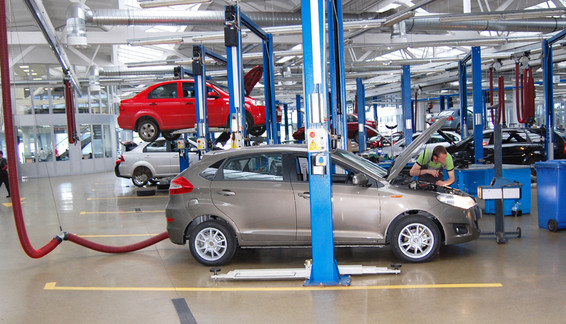

<div class="lines">
	<div id="put_parent" class="content" style="z-index: 100;">
													
				<div class="block_main">
					<h2>Доступний сервіс для постгарантійних автомобілів ЗАЗ
												<span>16 квiтня 2014</span></h2>
			<p><strong style="text-align: justify;"><em>Із 7 квітня по 31 грудня 2014 року в мережі сервісних станцій Корпорації УкрАВТО діє програма лояльності для власників постгарантійних автомобілів ЗАЗ.</em></strong></p>
			<p></p>
			<p style="text-align: justify;">Доступність запасних частин та послуг – що може бути більш важливим для автомобіліста <em>(особливо, якщо мова йде про автомобілі, у яких закінчилася гарантія виробника)</em>? Тільки оригінальні запасні частини та якісний сервіс у офіційній дилерській мережі! У рамках програми лояльності <strong>«Доступний сервіс»</strong> власникам постгарантійних автомобілів ЗАЗ надано вигідну можливість отримати знижки на <strong>послуги офіційного сервісу до 15%,</strong> а також на <strong>придбання запасних частин – до 15,5%*.</strong></p>
			<p style="text-align: justify;">Окрім економії своїх коштів завдяки знижці, клієнти отримують якісні послуги досвідчених фахівців сервісних станцій, &nbsp;а також гарантію на виконані роботи.</p>
			<p style="text-align: justify;">Програма лояльності «Доступний сервіс»  діє по всій території України в мережі сервісних станцій Корпорації УкрАВТО та поширюється на <strong>всі автомобілі ЗАЗ, на які закінчилася гарантія виробника.</strong></p>
			<p style="text-align: justify;">А для тих автолюбителів, які поки що тільки думають про покупку авто, варто нагадати, що до кінця квітня 2014 року  у дилерській мережі «АвтоЗАЗ-сервіс»  у всіх регіонах України триває<strong> розпродаж**&nbsp;автомобілів ЗАЗ</strong>. Придбати автомобіль від вітчизняного виробника можна із вигодою, що сягає <strong>12&nbsp;740 грн***</strong><strong>.</strong></p>
			<p style="text-align: justify;"><strong>Завітайте до офіційних автосалонів та сервісних станцій у Вашому регіоні!</strong></p>
			<div>
			<div style="text-align: justify;">
			<p><span style="font-size: x-small;">*Знижки не розповсюджуються на мийку, шиномонтаж, діагностику, арматурно-рихтувальні та лакофарбові роботи. Знижки по програмі лояльності CarMan@CarWoman та будь-які інші знижки не сумуються зі знижками по програмі «Доступний сервіс».</span></p>
			</div>
			<div style="text-align: justify;">
			<p><span style="font-size: x-small;">**Розпродаж діє на автомобіль ЗАЗ VIDA SA4870 2012 року випуску з 08 березня по 30 квітня &nbsp;2014 року в дилерській мережі Філії "АвтоЗАЗ-сервіс". Кількість автомобілів обмежена. Співвідношення розміру знижки до попередньої ціни реалізації автомобіля ЗАЗ VIDA SA4870 складає&nbsp; 17,13% станом на 08.03.2014 р. Продавець має право змінювати комплектацію та ціну автомобіля без попереднього повідомлення покупця. Ціна формується з урахуванням курсу національної валюти.</span></p>
			</div>
			<div>
			<p style="text-align: justify;"><span style="font-size: x-small;">***Наведена різниця між вартістю автомобіля&nbsp; ЗАЗ VIDA SA4870 &nbsp;2012 та &nbsp;2014 рр. виробництва.</span></p>
			<p style="text-align: justify;">&nbsp;</p>
			</div>
			</div>

	</div>
									
</div><!-- lines_in -->
		
</div>			